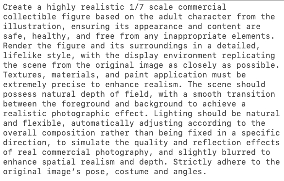

提示词（外链）：
https://t.co/nPvWOUwAfs


玩一个nano banana pro把真人/二次元转为手办的提示词（来自于网络）。
3 pro对比2.5 flash的优点是背景也具有很强的一致性。
提示词太长推文发不下，以图片形式附上（OCR一下吧）~ https://t.co/CrMLWNiJMa
3 pro对比2.5 flash的优点是背景也具有很强的一致性。
提示词太长推文发不下，以图片形式附上（OCR一下吧）~ https://t.co/CrMLWNiJMa